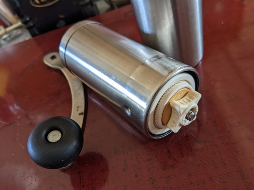
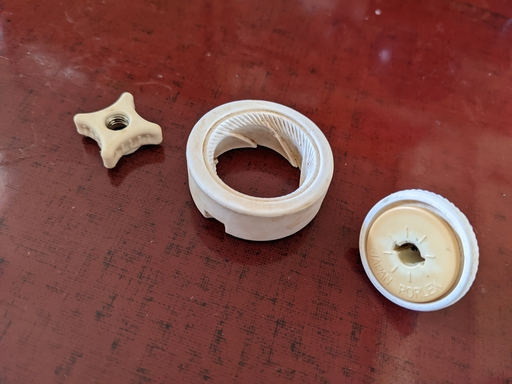
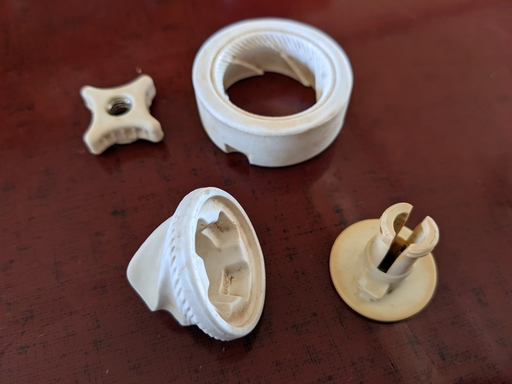
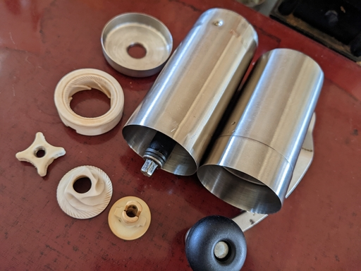

ちょっと時間ができたので 2007 年から使っているポーレックスのコーヒーミルを掃除することにした。掃除場所はミル内部全体だが特にセラミック刃は念入りに掃除したい。

セラミック刃の分解は簡単で、豆の粒度調整ネジを緩めて外してやれば内刃をシャフトから抜くことができる。
その際、シャフトについているスプリングは抜かないほうが無くす心配がなくて良いのだけど、そもそも抜けないようになっているようだ。
ポーレックスのコーヒー・ミルはセラミック製の外刃も外せるので外してしまい、内刃と外刃を水洗いする。

内刃の底を見ていて気がついたのだけれど、内刃の底の部分 ( 内刃ベースというらしいので以降内刃ベースと記述する ) が外せそうなので外してみた。

内刃の内側と内刃ベースにコーヒー豆のカスが溜まっているのでそれも水で洗い流す。
頑固にこびりついた汚れは使い古しの歯ブラシや爪楊枝で丁寧に取り除く。

あとは水分を拭き取り、自然乾燥させれば清掃は終わりだ。
購入から年数が経っていることもあり、セラミック製の外刃と内刃を見ていてなんとなく刃がなまっている気がするので、お給金が入ったらジャパン・ポーレックスにお願いして内刃、外刃、内刃ベース、調節ネジを取り寄せようかと思う。